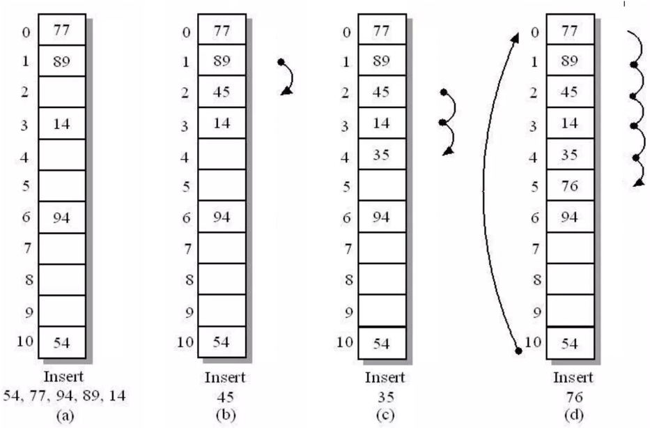
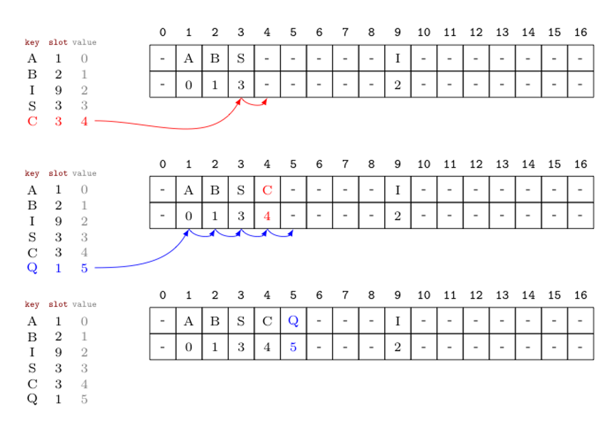
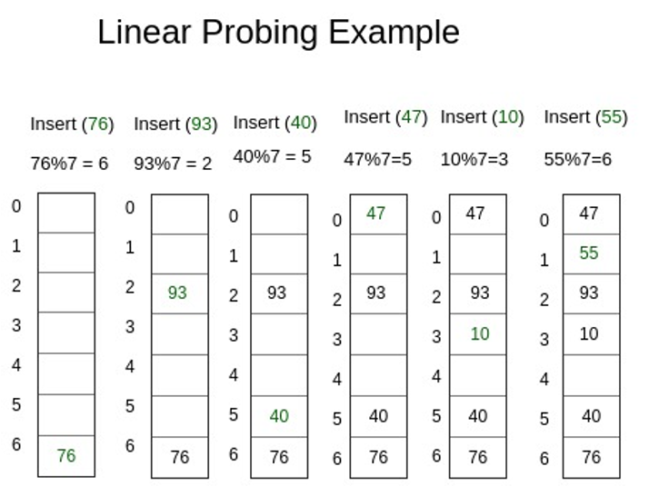
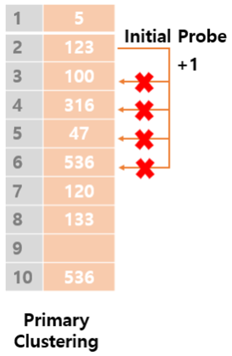

<!DOCTYPE html>
<html lang="en">
  <head>
    <meta charset="utf-8" />
    <meta name="viewport" content="width=device-width, initial-scale=1.0, maximum-scale=1.0, user-scalable=no" />

    <title></title>
    <link rel="stylesheet" href="dist/reveal.css" />
    <link rel="stylesheet" href="dist/theme/iph.css" id="theme" />
    <link rel="stylesheet" href="plugin/highlight/spyder.css" />
	<link rel="stylesheet" href="css/layout.css" />
	<link rel="stylesheet" href="plugin/customcontrols/style.css">


    <script defer src="dist/fontawesome/all.min.js"></script>

	<script type="text/javascript">
		var forgetPop = true;
		function onPopState(event) {
			if(forgetPop){
				forgetPop = false;
			} else {
				parent.postMessage(event.target.location.href, "app://obsidian.md");
			}
        }
		window.onpopstate = onPopState;
		window.onmessage = event => {
			if(event.data == "reload"){
				window.document.location.reload();
			}
			forgetPop = true;
		}

		function fitElements(){
			const itemsToFit = document.getElementsByClassName('fitText');
			for (const item in itemsToFit) {
				if (Object.hasOwnProperty.call(itemsToFit, item)) {
					var element = itemsToFit[item];
					fitElement(element,1, 1000);
					element.classList.remove('fitText');
				}
			}
		}

		function fitElement(element, start, end){

			let size = (end + start) / 2;
			element.style.fontSize = `${size}px`;

			if(Math.abs(start - end) < 1){
				while(element.scrollHeight > element.offsetHeight){
					size--;
					element.style.fontSize = `${size}px`;
				}
				return;
			}

			if(element.scrollHeight > element.offsetHeight){
				fitElement(element, start, size);
			} else {
				fitElement(element, size, end);
			}		
		}


		document.onreadystatechange = () => {
			fitElements();
			if (document.readyState === 'complete') {
				if (window.location.href.indexOf("?export") != -1){
					parent.postMessage(event.target.location.href, "app://obsidian.md");
				}
				if (window.location.href.indexOf("print-pdf") != -1){
					let stateCheck = setInterval(() => {
						clearInterval(stateCheck);
						window.print();
					}, 250);
				}
			}
	};


        </script>
  </head>
  <body>
    <div class="reveal">
      <div class="slides"><section  data-markdown><script type="text/template"><!-- .slide: class="has-light-background drop" data-background-color="#f8f8f8" -->
<div class="" style="position: absolute; left: 0px; top: 0px; height: 700px; width: 960px; min-height: 700px; display: flex; flex-direction: column; align-items: center; justify-content: center" absolute="true">

### Estructura de Datos y Algoritmos - EDA

####  *Linear Probing*

[Eduardo Rosales](mailto:ee.rosales24@uniandes.edu.co)

Departamento de Ingeniería de Sistemas y Computación

Universidad de los Andes
</div></script></section><section  data-markdown><script type="text/template"><!-- .slide: class="has-light-background drop" data-background-color="#f8f8f8" -->
<div class="" style="position: absolute; left: 0px; top: 0px; height: 700px; width: 960px; min-height: 700px; display: flex; flex-direction: column; align-items: center; justify-content: center" absolute="true">

### División de responsabilidades (repaso)


</div></script></section><section  data-markdown><script type="text/template"><!-- .slide: class="has-light-background drop" data-background-color="#f8f8f8" -->
<div class="" style="position: absolute; left: 0px; top: 0px; height: 700px; width: 960px; min-height: 700px; display: flex; flex-direction: column; align-items: center; justify-content: center" absolute="true">

### Manejo de colisiones (repaso)

- Sin importar el método usado por la función de compresión
	- **Siempre habrá colisiones**
- Las colisiones pueden reducirse
	- Pero no evitarse

	<br>
- Solución:
	- Hay que aprender a **manejar las colisiones**
</div></script></section><section  data-markdown><script type="text/template"><!-- .slide: class="has-light-background drop" data-background-color="#f8f8f8" -->
<div class="" style="position: absolute; left: 0px; top: 0px; height: 700px; width: 960px; min-height: 700px; display: flex; flex-direction: column; align-items: center; justify-content: center" absolute="true">

### Resolución de colisiones


- Hay dos métodos muy conocidos

	- **Linear probing** (Sondeo lineal)
	- Separate chaining (Encadenamiento separado)

	<br>
- En esta clase estudiaremos:
	- Linear probing o Sondeo lineal
</div></script></section><section  data-markdown><script type="text/template"><!-- .slide: class="has-light-background drop" data-background-color="#f8f8f8" -->
<div class="" style="position: absolute; left: 0px; top: 0px; height: 700px; width: 960px; min-height: 700px; display: flex; flex-direction: column; align-items: center; justify-content: center" absolute="true">

### Linear probing (Sondeo lineal)

- Si hay colisión
	- Buscar una posición disponible en el arreglo


</div></script></section><section  data-markdown><script type="text/template"><!-- .slide: class="has-light-background drop" data-background-color="#f8f8f8" -->
<div class="" style="position: absolute; left: 0px; top: 0px; height: 700px; width: 960px; min-height: 700px; display: flex; flex-direction: column; align-items: center; justify-content: center" absolute="true">

### Linear probing (Sondeo lineal) - Tipos de casillas (1/2)


1. **Vacía**
	- A.k.a: `None`, espacios vacío, casilla vacía, espacio nuevo

	- Espacio que no ha sido usado **nunca**
</div></script></section><section  data-markdown><script type="text/template"><!-- .slide: class="has-light-background drop" data-background-color="#f8f8f8" -->
<div class="" style="position: absolute; left: 0px; top: 0px; height: 700px; width: 960px; min-height: 700px; display: flex; flex-direction: column; align-items: center; justify-content: center" absolute="true">

### Linear probing (Sondeo lineal) - Tipos de casillas (2/2)


2. **Marcada**
	- A.k.a:  marcada por eliminación (`'__EMPTY__'`, casilla especial)

	- Espacio que fue liberado (**estuvo en uso**)
		- **Liberado únicamente por proceso de eliminación**
</div></script></section><section  data-markdown><script type="text/template"><!-- .slide: class="has-light-background drop" data-background-color="#f8f8f8" -->
<div class="" style="position: absolute; left: 0px; top: 0px; height: 700px; width: 960px; min-height: 700px; display: flex; flex-direction: column; align-items: center; justify-content: center" absolute="true">

### Utilidad de las casillas marcadas

- **Continuidad del sondeo**:
    - Previenen paradas prematuras en la búsqueda
- **Evitan errores**:
    - Aseguran que la búsqueda solo se detenga en una casilla vacía
- **Uso en eliminación**:
    - Se generan únicamente al eliminar elementos
- **Optimización del espacio**:
    - Indican casillas disponibles para nuevas inserciones
</div></script></section><section  data-markdown><script type="text/template"><!-- .slide: class="has-light-background drop" data-background-color="#f8f8f8" -->
<div class="" style="position: absolute; left: 0px; top: 0px; height: 700px; width: 960px; min-height: 700px; display: flex; flex-direction: column; align-items: center; justify-content: center" absolute="true">

### Estudiemos las operaciones básicas de un mapa que usa linear probing
</div></script></section><section  data-markdown><script type="text/template"><!-- .slide: class="has-light-background drop" data-background-color="#f8f8f8" -->
<div class="" style="position: absolute; left: 0px; top: 0px; height: 700px; width: 960px; min-height: 700px; display: flex; flex-direction: column; align-items: center; justify-content: center" absolute="true">

### Inserción - `put()`
</div></script></section><section  data-markdown><script type="text/template"><!-- .slide: class="has-light-background drop" data-background-color="#f8f8f8" -->
<div class="" style="position: absolute; left: 0px; top: 0px; height: 700px; width: 960px; min-height: 700px; display: flex; flex-direction: column; align-items: center; justify-content: center" absolute="true">

### Inserción - `put()`


- Mejor caso:
	- Se inserta en el índice
- Si la posición está ocupada
	- Inserta en la primera casilla disponible:
		- Vacía o 
		- Marcada
</div></script></section><section  data-markdown><script type="text/template"><!-- .slide: class="has-light-background drop" data-background-color="#f8f8f8" -->
<div class="" style="position: absolute; left: 0px; top: 0px; height: 700px; width: 960px; min-height: 700px; display: flex; flex-direction: column; align-items: center; justify-content: center" absolute="true">

### Algoritmo de inserción (1/4)

- **Cálculo del índice**:
    
    - Se obtiene el hash de la llave
    - Se calcula el índice en el arreglo
    
- **Creación de casilla**:
    - Se crea una nueva casilla (llave, valor)

- **Búsqueda de posición**:    
    - Si la posición está disponible
	    - Se inserta
		    - Se retorna el mapa actualizado
    - Caso contrario
        - Sondeo lineal
</div></script></section><section  data-markdown><script type="text/template"><!-- .slide: class="has-light-background drop" data-background-color="#f8f8f8" -->
<div class="" style="position: absolute; left: 0px; top: 0px; height: 700px; width: 960px; min-height: 700px; display: flex; flex-direction: column; align-items: center; justify-content: center" absolute="true">

### Algoritmo de inserción (2/4)


- **Sondeo lineal**:
	- Busca linealmente
		-  Una próxima casilla vacía o marcada
	- Casillas marcadas **sirven para inserción**
</div></script></section><section  data-markdown><script type="text/template"><!-- .slide: class="has-light-background drop" data-background-color="#f8f8f8" -->
<div class="" style="position: absolute; left: 0px; top: 0px; height: 700px; width: 960px; min-height: 700px; display: flex; flex-direction: column; align-items: center; justify-content: center" absolute="true">

### Algoritmo de inserción (3/4)

- **Guardar o reemplazar**:    
    - Inserta o reemplaza la entrada en la posición disponible
    
- **Incremento de tamaño**:
    - Si es una nueva llave
        - Incrementa el tamaño del mapa
        - Se actualiza el factor de carga
</div></script></section><section  data-markdown><script type="text/template"><!-- .slide: class="has-light-background drop" data-background-color="#f8f8f8" -->
<div class="" style="position: absolute; left: 0px; top: 0px; height: 700px; width: 960px; min-height: 700px; display: flex; flex-direction: column; align-items: center; justify-content: center" absolute="true">

### Algoritmo de inserción (4/4)

- **Verificación de rehash**:
    - Si el factor de carga supera el límite
        - Ejecuta rehash
</div></script></section><section  data-markdown><script type="text/template"><!-- .slide: class="has-light-background drop" data-background-color="#f8f8f8" -->
<div class="" style="position: absolute; left: 0px; top: 0px; height: 700px; width: 960px; min-height: 700px; display: flex; flex-direction: column; align-items: center; justify-content: center" absolute="true">

### Inserción - Ejemplo (1/2)



</div></script></section><section  data-markdown><script type="text/template"><!-- .slide: class="has-light-background drop" data-background-color="#f8f8f8" -->
<div class="" style="position: absolute; left: 0px; top: 0px; height: 700px; width: 960px; min-height: 700px; display: flex; flex-direction: column; align-items: center; justify-content: center" absolute="true">

### Algoritmo de inserción - Último índice (1/2)

- **Cálculo del índice**:
    - Se obtiene el hash de la llave
    - Se calcula el índice en el arreglo
    
- **Inserción de llave**:
    - Puede apuntar al último índice del arreglo
    
- **Caso último índice ocupado**:
    - Se produce una colisión
	    - Sondeo lineal
</div></script></section><section  data-markdown><script type="text/template"><!-- .slide: class="has-light-background drop" data-background-color="#f8f8f8" -->
<div class="" style="position: absolute; left: 0px; top: 0px; height: 700px; width: 960px; min-height: 700px; display: flex; flex-direction: column; align-items: center; justify-content: center" absolute="true">

### Algoritmo de inserción - Último índice (2/2)

- **Sondeo lineal**:
    - Busca el siguiente espacio libre
        - Casilla vacía
        - Casilla marcada
        
    - **Si no hay espacio al final**
        - Vuelve al inicio del arreglo
        - Continúa el sondeo hasta encontrar espacio
	        - Inserta la llave
</div></script></section><section  data-markdown><script type="text/template"><!-- .slide: class="has-light-background drop" data-background-color="#f8f8f8" -->
<div class="" style="position: absolute; left: 0px; top: 0px; height: 700px; width: 960px; min-height: 700px; display: flex; flex-direction: column; align-items: center; justify-content: center" absolute="true">

### Inserción - Ejemplo (2/2)

- Nota: Se usa una función de hash simplificada
	- No la requerida en el curso


</div></script></section><section  data-markdown><script type="text/template"><!-- .slide: class="has-light-background drop" data-background-color="#f8f8f8" -->
<div class="" style="position: absolute; left: 0px; top: 0px; height: 700px; width: 960px; min-height: 700px; display: flex; flex-direction: column; align-items: center; justify-content: center" absolute="true">

### Inserción - Complejidad temporal (1/2)

- **Mejor caso - O(1)**:

	- La inserción sucede en el índice
		- Porque la posición en índice estaba disponible
- **Caso promedio - Generalmente O(1)**:
	- Cuando hay pocas colisiones
	- Depende del factor de carga y la distribución de hash
		- Menos colisiones significa inserción más rápida
- **Peor caso - O(n)**:
	- Cuando la tabla está muy llena ó 
		- Muchas colisiones llevan a un sondeo extenso
			- Y esa búsqueda tiende a recorrer `n` elementos
</div></script></section><section  data-markdown><script type="text/template"><!-- .slide: class="has-light-background drop" data-background-color="#f8f8f8" -->
<div class="" style="position: absolute; left: 0px; top: 0px; height: 700px; width: 960px; min-height: 700px; display: flex; flex-direction: column; align-items: center; justify-content: center" absolute="true">

### Inserción - Complejidad temporal (2/2)

- Hay amortización:
	- Rehashing es necesario cuando el factor de carga supera un umbral
		- Lo que implica un rehash de complejidad O(n) 
			- Pero se amortiza sobre muchas inserciones
				- Y se puede considerar **O(1)**
</div></script></section><section  data-markdown><script type="text/template"><!-- .slide: class="has-light-background drop" data-background-color="#f8f8f8" -->
<div class="" style="position: absolute; left: 0px; top: 0px; height: 700px; width: 960px; min-height: 700px; display: flex; flex-direction: column; align-items: center; justify-content: center" absolute="true">

### Búsqueda - `get()`
</div></script></section><section  data-markdown><script type="text/template"><!-- .slide: class="has-light-background drop" data-background-color="#f8f8f8" -->
<div class="" style="position: absolute; left: 0px; top: 0px; height: 700px; width: 960px; min-height: 700px; display: flex; flex-direction: column; align-items: center; justify-content: center" absolute="true">

### Búsqueda - `get()`


- Mejor caso:
	- La llave está en el índice
- En colisión:
	- Avanza linealmente (`indice + 1`) 
		- Caso llave existe:
			- Avance hasta encontrar la llave
		- Caso llave inexistente:
			- Avance hasta encontrar una casilla vacía
</div></script></section><section  data-markdown><script type="text/template"><!-- .slide: class="has-light-background drop" data-background-color="#f8f8f8" -->
<div class="" style="position: absolute; left: 0px; top: 0px; height: 700px; width: 960px; min-height: 700px; display: flex; flex-direction: column; align-items: center; justify-content: center" absolute="true">

### Algoritmo de búsqueda (1/3)

- **Cálculo del índice**:
    - Se obtiene el hash de la llave
    - Se calcula el índice en el arreglo

- **Búsqueda en la posición**:
    - Si la llave está en la posición
	    - Retorna el valor asociado
    - Caso contrario
	    - Sondeo lineal
</div></script></section><section  data-markdown><script type="text/template"><!-- .slide: class="has-light-background drop" data-background-color="#f8f8f8" -->
<div class="" style="position: absolute; left: 0px; top: 0px; height: 700px; width: 960px; min-height: 700px; display: flex; flex-direction: column; align-items: center; justify-content: center" absolute="true">

### Algoritmo de búsqueda (2/3)

- **Sondeo lineal**:
	- Busca linealmente
		- La siguiente casilla donde podría estar o 
			- Encuentra una vacía
		- Casillas marcadas **NO interrumpen** la búsqueda
</div></script></section><section  data-markdown><script type="text/template"><!-- .slide: class="has-light-background drop" data-background-color="#f8f8f8" -->
<div class="" style="position: absolute; left: 0px; top: 0px; height: 700px; width: 960px; min-height: 700px; display: flex; flex-direction: column; align-items: center; justify-content: center" absolute="true">

### Algoritmo de búsqueda (3/3)

- **Sondeo lineal**:
    - Si encuentra la llave 
	    - Retorna el valor
	- Si se encuentra una casilla marcada
		- Continua el sondeo lineal
    - Si encuentra una casilla vacía
	    - Retorna `None` 
		    - Caso llave no encontrada
</div></script></section><section  data-markdown><script type="text/template"><!-- .slide: class="has-light-background drop" data-background-color="#f8f8f8" -->
<div class="" style="position: absolute; left: 0px; top: 0px; height: 700px; width: 960px; min-height: 700px; display: flex; flex-direction: column; align-items: center; justify-content: center" absolute="true">

### Búsqueda - Complejidad temporal

- **Mejor caso - O(1)**:
	- La llave existe y estaba en el índice
- **Caso promedio - Generalmente O(1)**:
	- Cuando hay pocas colisiones
	- Depende del factor de carga y la distribución de hash
		- Menos colisiones significa sondeo más corto
- **Peor caso - O(n)**:
	- Cuando la tabla está muy llena ó 
		- Muchas colisiones llevan un sondeo extenso
			- Y la llave no existe
</div></script></section><section  data-markdown><script type="text/template"><!-- .slide: class="has-light-background drop" data-background-color="#f8f8f8" -->
<div class="" style="position: absolute; left: 0px; top: 0px; height: 700px; width: 960px; min-height: 700px; display: flex; flex-direction: column; align-items: center; justify-content: center" absolute="true">

### Eliminación - `remove()`
</div></script></section><section  data-markdown><script type="text/template"><!-- .slide: class="has-light-background drop" data-background-color="#f8f8f8" -->
<div class="" style="position: absolute; left: 0px; top: 0px; height: 700px; width: 960px; min-height: 700px; display: flex; flex-direction: column; align-items: center; justify-content: center" absolute="true">

### Eliminación - `remove()`


- Mejor caso:
	- Elemento a eliminar está en el índice
- En colisión:
	- Avanza linealmente (`indice + 1`) 
		- Caso llave existe:
			- Avanza hasta encontrar la llave
		- Caso llave inexistente:
			- Avanza hasta encontrar una **casilla vacía**
</div></script></section><section  data-markdown><script type="text/template"><!-- .slide: class="has-light-background drop" data-background-color="#f8f8f8" -->
<div class="" style="position: absolute; left: 0px; top: 0px; height: 700px; width: 960px; min-height: 700px; display: flex; flex-direction: column; align-items: center; justify-content: center" absolute="true">

### Algoritmo de eliminación (1/5)

- **Cálculo del índice**:
    - Se obtiene el hash de la llave
    - Se calcula el índice en el arreglo
    
- **Búsqueda de la llave**:
    - Verifica si la llave está en la posición calculada
	    - Elimina la pareja llave-valor
		    - Retorna el mapa actualizado
    - Caso contrario
        - Sondeo lineal
</div></script></section><section  data-markdown><script type="text/template"><!-- .slide: class="has-light-background drop" data-background-color="#f8f8f8" -->
<div class="" style="position: absolute; left: 0px; top: 0px; height: 700px; width: 960px; min-height: 700px; display: flex; flex-direction: column; align-items: center; justify-content: center" absolute="true">

### Algoritmo de eliminación (2/5)

- **Sondeo lineal**:
	- Busca linealmente
		- La siguiente casilla donde podría estar o 
			- Encuentra una casilla vacía
		- Casillas marcadas **NO interrumpen** la búsqueda
</div></script></section><section  data-markdown><script type="text/template"><!-- .slide: class="has-light-background drop" data-background-color="#f8f8f8" -->
<div class="" style="position: absolute; left: 0px; top: 0px; height: 700px; width: 960px; min-height: 700px; display: flex; flex-direction: column; align-items: center; justify-content: center" absolute="true">

### Algoritmo de eliminación (3/5)

- **Sondeo lineal**:
    - Si encuentra la llave
	    - Elimina la entrada
		    - Retorna el mapa actualizado
	- Si se encuentra una casilla marcada
		- Continua el sondeo lineal
    - Si encuentra una casilla vacía
	    - (Típicamente) Retorna `None` 
		    - Caso llave no encontrada
</div></script></section><section  data-markdown><script type="text/template"><!-- .slide: class="has-light-background drop" data-background-color="#f8f8f8" -->
<div class="" style="position: absolute; left: 0px; top: 0px; height: 700px; width: 960px; min-height: 700px; display: flex; flex-direction: column; align-items: center; justify-content: center" absolute="true">

### Algoritmo de eliminación (4/5)

- Si la llave fue encontrada
	- Eliminación de la entrada:
	    - Si la llave fue encontrada
	        - Marca la casilla
		        - La convierte en **casilla marcada**
			        - Ej: `'__EMPTY__'`, `'__EMPTY__'`
</div></script></section><section  data-markdown><script type="text/template"><!-- .slide: class="has-light-background drop" data-background-color="#f8f8f8" -->
<div class="" style="position: absolute; left: 0px; top: 0px; height: 700px; width: 960px; min-height: 700px; display: flex; flex-direction: column; align-items: center; justify-content: center" absolute="true">

### Algoritmo de eliminación (5/5)

- Si la llave fue encontrada:
	- **Ajuste del tamaño**:    
	    - Disminuye el tamaño del mapa
    
	- **Opcional: Verificación de rehash**:
	    - Si el factor de carga es demasiado bajo
	        - Ejecuta rehash
        
	- **Retorno**:
	    - Retorna el mapa actualizado
</div></script></section><section  data-markdown><script type="text/template"><!-- .slide: class="has-light-background drop" data-background-color="#f8f8f8" -->
<div class="" style="position: absolute; left: 0px; top: 0px; height: 700px; width: 960px; min-height: 700px; display: flex; flex-direction: column; align-items: center; justify-content: center" absolute="true">

### Utilidad de las casillas marcadas (repaso)

- **Continuidad del sondeo**:
    - Previenen paradas prematuras en la búsqueda
- **Evitan errores**:
    - Aseguran que la búsqueda solo se detenga en una casilla vacía
- **Uso en eliminación**:
    - Se generan únicamente al eliminar elementos
- **Optimización del espacio**:
    - Indican casillas disponibles para nuevas inserciones
</div></script></section><section  data-markdown><script type="text/template"><!-- .slide: class="has-light-background drop" data-background-color="#f8f8f8" -->
<div class="" style="position: absolute; left: 0px; top: 0px; height: 700px; width: 960px; min-height: 700px; display: flex; flex-direction: column; align-items: center; justify-content: center" absolute="true">

### Eliminación - Complejidad temporal (1/2)

- **Mejor caso - O(1)**:
	- La llave existe y estaba en el índice
- **Caso promedio - Generalmente O(1)**:
	- Cuando hay pocas colisiones
	- Depende del factor de carga y la distribución de hash
		- Menos colisiones significa sondeo más corto
- **Peor caso - O(n)**:
	- Cuando la tabla está muy llena ó 
		- Muchas colisiones llevan un sondeo extenso
			- Y la llave no existe
</div></script></section><section  data-markdown><script type="text/template"><!-- .slide: class="has-light-background drop" data-background-color="#f8f8f8" -->
<div class="" style="position: absolute; left: 0px; top: 0px; height: 700px; width: 960px; min-height: 700px; display: flex; flex-direction: column; align-items: center; justify-content: center" absolute="true">

### Eliminación - Complejidad temporal (2/2)

- Amortización (opcional):
    - Podría usarse rehashing si el factor de carga es demasiado bajo
        - Lo que implicaría un rehash de complejidad O(n)
            - Pero se amortizaría sobre muchas eliminaciones
                - Y se puede considerar **O(1)**
</div></script></section><section  data-markdown><script type="text/template"><!-- .slide: class="has-light-background drop" data-background-color="#f8f8f8" -->
<div class="" style="position: absolute; left: 0px; top: 0px; height: 700px; width: 960px; min-height: 700px; display: flex; flex-direction: column; align-items: center; justify-content: center" absolute="true">

### Linear Probing - Complejidad espacial

- **O(m)**
	- `m`: Número de slots en la tabla hash (en el arreglo subyacente)
</div></script></section><section  data-markdown><script type="text/template"><!-- .slide: class="has-light-background drop" data-background-color="#f8f8f8" -->
<div class="" style="position: absolute; left: 0px; top: 0px; height: 700px; width: 960px; min-height: 700px; display: flex; flex-direction: column; align-items: center; justify-content: center" absolute="true">

### Comprendamos mejor el concepto de factor de carga en linear probing
</div></script></section><section  data-markdown><script type="text/template"><!-- .slide: class="has-light-background drop" data-background-color="#f8f8f8" -->
<div class="" style="position: absolute; left: 0px; top: 0px; height: 700px; width: 960px; min-height: 700px; display: flex; flex-direction: column; align-items: center; justify-content: center" absolute="true">

### Factor de carga (repaso)


- Razón entre elementos almacenados y capacidad total
- Medida que indica cuánto está de llena la tabla
- Cálculo: 
	- `α = N/M`
	- `N`: El número de pares <llave, valor>
	- `M`: Tamaño de la tabla (preferiblemente un número primo)
</div></script></section><section  data-markdown><script type="text/template"><!-- .slide: class="has-light-background drop" data-background-color="#f8f8f8" -->
<div class="" style="position: absolute; left: 0px; top: 0px; height: 700px; width: 960px; min-height: 700px; display: flex; flex-direction: column; align-items: center; justify-content: center" absolute="true">

### Factor de carga - Linear probing (1/3)

- **Bajo factor de carga**: 
	- Menos colisiones, pero desperdicio de memoria
- **Alto factor de carga**: 
	- Más colisiones, mejor uso de memoria, menor rendimiento
- **Balance ideal**: 
	- Se busca un equilibrio entre
		- Gestión eficiente de espacio y rendimiento
</div></script></section><section  data-markdown><script type="text/template"><!-- .slide: class="has-light-background drop" data-background-color="#f8f8f8" -->
<div class="" style="position: absolute; left: 0px; top: 0px; height: 700px; width: 960px; min-height: 700px; display: flex; flex-direction: column; align-items: center; justify-content: center" absolute="true">

### Factor de carga - Linear probing (2/3)

- **Debe mantenerse inferior a 1**:
	- Factor de carga < 1
		- Reduce colisiones y mejora eficiencia en operaciones
- **Menor factor de carga**: 
	- Más espacio entre elementos
- **Rango recomendado**: 
	- **`0.5` - `0.7`** para buen rendimiento
</div></script></section><section  data-markdown><script type="text/template"><!-- .slide: class="has-light-background drop" data-background-color="#f8f8f8" -->
<div class="" style="position: absolute; left: 0px; top: 0px; height: 700px; width: 960px; min-height: 700px; display: flex; flex-direction: column; align-items: center; justify-content: center" absolute="true">

### Factor de carga - Linear probing (3/3)

- `α = N/M`
	- `N`: El número de pares <llave, valor>
	- `M`: Tamaño de la tabla (preferiblemente un número primo)

- **Datos iniciales**:
    - Tamaño deseado (**N**) = 100
    - Factor de carga objetivo (**α**) = 0.7
- **Cálculo del tamaño de la tabla**:
    - **M** = N / α = **100 / 0.7 ≃ 143**
- **Ajuste a número primo**:
    - Primo más cercano a **143** → **149**
</div></script></section><section  data-markdown><script type="text/template"><!-- .slide: class="has-light-background drop" data-background-color="#f8f8f8" -->
<div class="" style="position: absolute; left: 0px; top: 0px; height: 700px; width: 960px; min-height: 700px; display: flex; flex-direction: column; align-items: center; justify-content: center" absolute="true">

### Uniformidad y colisiones - Linear probing


- **Función de compresión eficiente**
	- Distribuye uniformemente las llaves
		- Minimiza colisiones y sondeos
- **Función de compresión ineficiente**
	- Genera _aglomeraciones_
		- Más colisiones y sondeos largos
- **Crecimiento del mapa** 
	- Aun con buena compresión
		- Más elementos → más colisiones
</div></script></section><section  data-markdown><script type="text/template"><!-- .slide: class="has-light-background drop" data-background-color="#f8f8f8" -->
<div class="" style="position: absolute; left: 0px; top: 0px; height: 700px; width: 960px; min-height: 700px; display: flex; flex-direction: column; align-items: center; justify-content: center" absolute="true">

### El problema del clustering primario (1/2)

- **Aglomeración**: 
	- Abundancia de casillas consecutivas ocupadas


</div></script></section><section  data-markdown><script type="text/template"><!-- .slide: class="has-light-background drop" data-background-color="#f8f8f8" -->
<div class="" style="position: absolute; left: 0px; top: 0px; height: 700px; width: 960px; min-height: 700px; display: flex; flex-direction: column; align-items: center; justify-content: center" absolute="true">

### El problema del clustering primario (2/2)

- **Causa**: 
	- Las colisiones en sondeo lineal forman grupos contiguos
- **Efecto**: 
	- Aglomeraciones que aumentan colisiones
		- Y prolongan los sondeos
- **Solución**: 
	- Funciones de hash + compresión eficientes
- **Impacto**: 
	- Afecta búsquedas exitosas y fallidas
		- Degradando el rendimiento
</div></script></section><section  data-markdown><script type="text/template"><!-- .slide: class="has-light-background drop" data-background-color="#f8f8f8" -->
<div class="" style="position: absolute; left: 0px; top: 0px; height: 700px; width: 960px; min-height: 700px; display: flex; flex-direction: column; align-items: center; justify-content: center" absolute="true">

### Rehashing - Linear probing (1/2)

- **Propósito**: 
	- Mantener eficiencia y evitar degradación del rendimiento
- **Minimizar colisiones**: 
	- Distribuye llaves en una tabla más grande
		- Reduciendo colisiones directas
- **Mantener rendimiento**: 
	- Evita sondeos excesivos
		- Optimiza búsqueda, inserción y eliminación
</div></script></section><section  data-markdown><script type="text/template"><!-- .slide: class="has-light-background drop" data-background-color="#f8f8f8" -->
<div class="" style="position: absolute; left: 0px; top: 0px; height: 700px; width: 960px; min-height: 700px; display: flex; flex-direction: column; align-items: center; justify-content: center" absolute="true">

### Rehashing - Linear probing (2/2)

1. **Cuándo ocurre**:
    - Cuando el **factor de carga** supera un umbral (típicamente `0.5` o `0.75`)
    - La idea es evitar que las colisiones generen clustering primario
2. **Qué implica**:
    - Se crea un **nuevo arreglo de mayor tamaño** `N'`
	    - Generalmente el doble
		    - Número primo
    - Se **recalcula el índice de cada llave** con `N'`
    - Se **reinserta cada elemento** 
3. **Costo**:
    - La operación completa es **O(n)**
	    - Ya que hay que recorrer la tabla y reubicar los elementos
    - Se amortiza: **costo promedio O(1)**
</div></script></section><section  data-markdown><script type="text/template"><!-- .slide: class="has-light-background drop" data-background-color="#f8f8f8" -->
<div class="" style="position: absolute; left: 0px; top: 0px; height: 700px; width: 960px; min-height: 700px; display: flex; flex-direction: column; align-items: center; justify-content: center" absolute="true">

### Algoritmo de rehashing (1/2)

- **Crea nueva tabla**:
    - Capacidad **duplicada, número primo siguiente**
    
- **Inicializa tabla**:
    - Llena con entradas vacías (`None`)
    
- **Reinicia mapa**:
    - Restablece tamaño y factor de carga
    
- **Reasigna tabla**:
    - Guarda la antigua y asigna la nueva
</div></script></section><section  data-markdown><script type="text/template"><!-- .slide: class="has-light-background drop" data-background-color="#f8f8f8" -->
<div class="" style="position: absolute; left: 0px; top: 0px; height: 700px; width: 960px; min-height: 700px; display: flex; flex-direction: column; align-items: center; justify-content: center" absolute="true">

### Algoritmo de rehashing (2/2)

- **Rehash de elementos**:
    - Recorre la tabla antigua
    - Si la entrada tiene una **llave válida**
        - Recalcula hash e inserta en la nueva tabla
        - Ajusta tamaño y factor de carga
        
- **Ignora casillas vacías y casillas marcadas**:
    - Omite llaves `None` o `'__EMPTY__'`
    
- **Retorno**:
    - Retorna el mapa actualizado con la nueva capacidad
</div></script></section><section  data-markdown><script type="text/template"><!-- .slide: class="has-light-background drop" data-background-color="#f8f8f8" -->
<div class="" style="position: absolute; left: 0px; top: 0px; height: 700px; width: 960px; min-height: 700px; display: flex; flex-direction: column; align-items: center; justify-content: center" absolute="true">

### Tablas de símbolos – API


- **TODO:**
	- Revisar la [documentación de mapas](https://isis1225devs.github.io/ISIS1225-Structure-Documentation/DataStructures.Map.html)
		- En particular de [Linear probing](https://isis1225devs.github.io/ISIS1225-Structure-Documentation/DataStructures.Map.html#module-DataStructures.Map.map_linear_probing)
</div></script></section><section  data-markdown><script type="text/template"><!-- .slide: class="has-light-background drop" data-background-color="#f8f8f8" -->
<div class="" style="position: absolute; left: 0px; top: 0px; height: 700px; width: 960px; min-height: 700px; display: flex; flex-direction: column; align-items: center; justify-content: center" absolute="true">

<i class="fas fa-question-circle fa-2x fa-spin fa-4x"></i>


<br>
<br>


[<i class="fas fa-home  fa-3x"></i>](https://eerosales24.github.io/eda_2025_20/#)
</div></script></section></div>
    </div>

    <script src="dist/reveal.js"></script>

    <script src="plugin/markdown/markdown.js"></script>
    <script src="plugin/highlight/highlight.js"></script>
    <script src="plugin/zoom/zoom.js"></script>
    <script src="plugin/notes/notes.js"></script>
    <script src="plugin/math/math.js"></script>
	<script src="plugin/mermaid/mermaid.js"></script>
	<script src="plugin/chart/chart.min.js"></script>
	<script src="plugin/chart/plugin.js"></script>
	<script src="plugin/customcontrols/plugin.js"></script>

    <script>
      function extend() {
        var target = {};
        for (var i = 0; i < arguments.length; i++) {
          var source = arguments[i];
          for (var key in source) {
            if (source.hasOwnProperty(key)) {
              target[key] = source[key];
            }
          }
        }
        return target;
      }

	  function isLight(color) {
		let hex = color.replace('#', '');

		// convert #fff => #ffffff
		if(hex.length == 3){
			hex = `${hex[0]}${hex[0]}${hex[1]}${hex[1]}${hex[2]}${hex[2]}`;
		}

		const c_r = parseInt(hex.substr(0, 2), 16);
		const c_g = parseInt(hex.substr(2, 2), 16);
		const c_b = parseInt(hex.substr(4, 2), 16);
		const brightness = ((c_r * 299) + (c_g * 587) + (c_b * 114)) / 1000;
		return brightness > 155;
	}

	var bgColor = getComputedStyle(document.documentElement).getPropertyValue('--r-background-color').trim();
	var isLight = isLight(bgColor);

	if(isLight){
		document.body.classList.add('has-light-background');
	} else {
		document.body.classList.add('has-dark-background');
	}

      // default options to init reveal.js
      var defaultOptions = {
        controls: true,
        progress: true,
        history: true,
        center: true,
        transition: 'default', // none/fade/slide/convex/concave/zoom
        plugins: [
          RevealMarkdown,
          RevealHighlight,
          RevealZoom,
          RevealNotes,
          RevealMath.MathJax3,
		  RevealMermaid,
		  RevealChart,
		  RevealCustomControls,
        ],


    	allottedTime: 120 * 1000,

		mathjax3: {
			mathjax: 'plugin/math/mathjax/tex-mml-chtml.js',
		},
		markdown: {
		  gfm: true,
		  mangle: true,
		  pedantic: false,
		  smartLists: false,
		  smartypants: false,
		},

		mermaid: {
			theme: isLight ? 'default' : 'dark',
		},

		customcontrols: {
			controls: [
			]
		},
      };

      // options from URL query string
      var queryOptions = Reveal().getQueryHash() || {};

      var options = extend(defaultOptions, {"width":960,"height":700,"margin":"0.025","minScale":"0.1","maxScale":"2.0","controls":"true","controlsLayout":"bottom-right","progress":"true","slideNumber":"true","center":"false","transition":"slide","transitionSpeed":"default"}, queryOptions);
    </script>

    <script>
      Reveal.initialize(options);
    </script>
  </body>

  <!-- created with Advanced Slides -->
</html>
